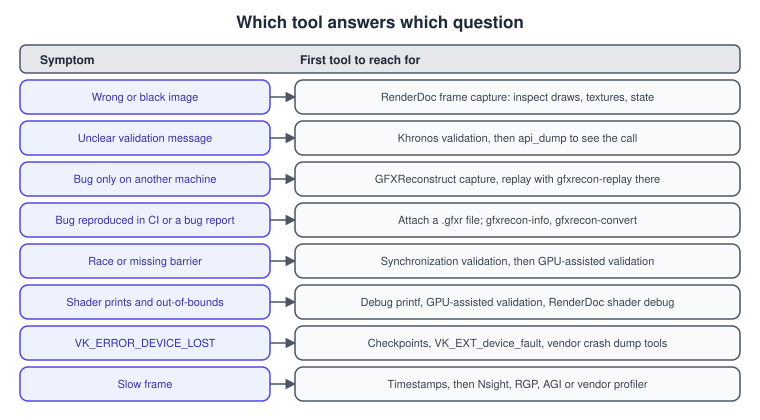
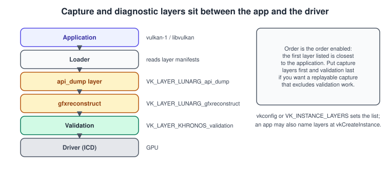
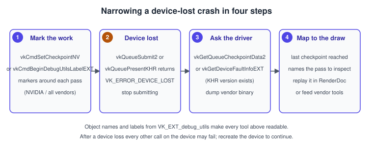

Debugging and Capture Tools for Vulkan
|
This content was generated with the assistance of AI and should be verified against the official documentation before being relied on in production. |
A Vulkan program that goes wrong rarely says why. The API does very little checking by itself (that is the price of its low overhead), so an incorrect call can produce a black screen, a hang, a crash in the driver or, worst of all, a picture that is right on your machine and wrong on someone else’s. The tools on this page turn those symptoms into evidence: the validation layer says that a call is wrong, a frame capture shows what the GPU was asked to do, a call log shows the order in which it was asked, a replayable trace lets another person see the same failure, and crash diagnostics narrow down which command was running when the device was lost.
The facts were checked in November 2026. The versions documented are Vulkan 1.4 (headers 1.4.3xx) and the LunarG SDK 1.4.363.0,
which ships vkconfig, the validation layer, the API dump layer and GFXReconstruct for Windows, Linux and macOS. RenderDoc is
installed separately. The examples are C++20 and use the C entry points so that the extension function names are explicit.
Validation itself, with GPU-assisted validation, Debug Printf and synchronization validation, is the subject of
Validation and Debug Utils; this page assumes it is already enabled
and covers what to do next. Measuring time is in Multithreading
and Performance. In the Vulkan Bookshelf running example the techniques apply to every stage, from the first triangle of
Bookshelf, Part 1 to the scene and game of
Bookshelf, Part 2. For the neighbouring ecosystems see
Metal Debugging and Profiling and the OpenGL and WebGL pages of the
same sub-sections.
Choosing a tool

The tools overlap, so a short rule helps:
-
If a call is rejected, crashes inside the driver or the output looks wrong, turn on
VK_LAYER_KHRONOS_validationfirst. Most Vulkan bugs are usage errors, and the layer reports them with the name of the object and the rule that was broken. -
If validation is silent but the picture is wrong, capture one frame with RenderDoc and inspect it: which draws ran, which textures and buffers were bound, what the pipeline state was, what each pass wrote.
-
If the bug appears only on another machine, or you need to hand the problem to someone else, capture the whole run with GFXReconstruct and replay the file there.
-
If you need the exact sequence and arguments of the calls, log them with the API dump layer.
-
If the device is lost, use checkpoints,
VK_EXT_device_faultand the vendor crash tools. -
If the frame is merely slow, use timestamps and a profiler.
The layer chain
Captures and logs are implemented as layers: libraries that the loader inserts between the application and the driver. Several layers can be active at once, and their order matters.

Layers are enabled in the Vulkan Configurator (vkconfig), with the VK_INSTANCE_LAYERS environment variable, or by listing
them in ppEnabledLayerNames of VkInstanceCreateInfo. The loader and layer mechanism is explained in
Instance, Loader and Layers and the layers shipped with the SDK are
described in the Vulkan Guide’s development tools chapter:
| Layer | Purpose |
|---|---|
|
Checks API usage. Includes synchronization validation, GPU-assisted validation, shader printf and best-practices warnings. |
|
Logs API calls with their parameters and values to an output stream. |
|
Captures API calls and resource contents into a file that |
|
Saves rendered frames as images. |
|
Shows the frame rate in the window title. |
|
Tests whether an application would run on a less capable device by limiting reported features and limits. |
Older guides name layers such as VK_LAYER_LUNARG_standard_validation, VK_LAYER_LUNARG_parameter_validation and
VK_LAYER_GOOGLE_threading; all of that validation lives in the single Khronos layer now. When several layers are enabled the
loader chains them in the order you listed them, with the first closest to the application. A capture layer placed before
validation records the calls as the application made them. Placed after validation, it records what validation passed on, which
is the same in practice, so the main reason to care about order is to keep an expensive layer (validation) out of a capture that
you want to replay at full speed, by capturing without it.
Naming things for the tools
Every tool below shows handles, so name them. VK_EXT_debug_utils gives each object a readable name and lets you open and close
labelled regions in a command buffer. RenderDoc, validation messages, GFXReconstruct and the vendor profilers all display them.
#include <vulkan/vulkan.h>
struct DebugUtils {
PFN_vkSetDebugUtilsObjectNameEXT setName = nullptr;
PFN_vkCmdBeginDebugUtilsLabelEXT beginLabel = nullptr;
PFN_vkCmdEndDebugUtilsLabelEXT endLabel = nullptr;
void load(VkInstance instance) {
setName = (PFN_vkSetDebugUtilsObjectNameEXT)vkGetInstanceProcAddr(instance, "vkSetDebugUtilsObjectNameEXT");
beginLabel = (PFN_vkCmdBeginDebugUtilsLabelEXT)vkGetInstanceProcAddr(instance, "vkCmdBeginDebugUtilsLabelEXT");
endLabel = (PFN_vkCmdEndDebugUtilsLabelEXT)vkGetInstanceProcAddr(instance, "vkCmdEndDebugUtilsLabelEXT");
}
void name(VkDevice device, VkObjectType type, uint64_t handle, const char* text) const {
if (!setName) return; // extension not enabled
VkDebugUtilsObjectNameInfoEXT info{VK_STRUCTURE_TYPE_DEBUG_UTILS_OBJECT_NAME_INFO_EXT};
info.objectType = type;
info.objectHandle = handle;
info.pObjectName = text;
setName(device, &info);
}
};
// RAII region: appears as a group in RenderDoc, Nsight, RGP and AGI.
struct ScopedLabel {
const DebugUtils& du; VkCommandBuffer cmd;
ScopedLabel(const DebugUtils& d, VkCommandBuffer c, const char* label, const float rgba[4]) : du(d), cmd(c) {
if (!du.beginLabel) return;
VkDebugUtilsLabelEXT l{VK_STRUCTURE_TYPE_DEBUG_UTILS_LABEL_EXT};
l.pLabelName = label;
for (int i = 0; i < 4; ++i) l.color[i] = rgba[i];
du.beginLabel(cmd, &l);
}
~ScopedLabel() { if (du.endLabel) du.endLabel(cmd); }
};
// du.name(device, VK_OBJECT_TYPE_IMAGE, (uint64_t)bookCoverImage, "bookshelf cover (BC7)");
// { ScopedLabel pass(du, cmd, "Shadow pass", red); ... record ... }Source: Vulkan Guide: VK_EXT_debug_utils
Wrapping the calls in a function that does nothing when the extension is absent keeps the code identical in release builds. Names have a small cost, so many projects compile the labels out of shipping builds.
RenderDoc
RenderDoc is an open-source frame debugger that captures one frame of a running Vulkan application and lets you step through
it afterwards. It does not need source changes: you start the application from RenderDoc (or attach through its injected layer),
press the capture hotkey or its button, and open the resulting .rdc file.
A capture gives you:
-
The event list: every draw, dispatch, copy and clear of the frame, grouped by the debug labels you added.
-
For each event, the pipeline state (shaders, vertex input, rasterizer state, blend state, bound descriptors), the contents of every bound buffer and image, and the render targets before and after.
-
A mesh viewer for the vertex data, input and output of the vertex stage, and the primitives drawn.
-
A shader debugger that can step through a pixel, vertex or compute thread, and pixel history for one pixel across the frame.
-
Per-event timings and an overdraw view. Timings ignore the overlap of events on the GPU, so use them to find heavy passes and use a vendor profiler for precise numbers (see Multithreading and Performance).
What to look at first when the Bookshelf draws nothing: select the last draw of the colour pass and check whether the render target is empty; if it is not, the problem is presentation or synchronization; if it is, step back to the vertex output in the mesh viewer to see whether the vertices are inside the clip volume, then check the viewport and scissor, the depth state (reversed-Z with a depth test of less-or-equal draws nothing), the face culling and the bound descriptors.
Capturing from inside the application
The in-application API lets the program decide when to capture, which is the practical way to capture one specific frame such
as the moment a book is picked. You include renderdoc_app.h from the RenderDoc installation, do not link RenderDoc, and look
up the API only if RenderDoc has already loaded itself into the process.
#include "renderdoc_app.h"
#if defined(_WIN32)
# include <windows.h>
#else
# include <dlfcn.h>
#endif
RENDERDOC_API_1_1_2* loadRenderDoc() {
pRENDERDOC_GetAPI getApi = nullptr;
#if defined(_WIN32)
if (HMODULE mod = GetModuleHandleA("renderdoc.dll"))
getApi = (pRENDERDOC_GetAPI)GetProcAddress(mod, "RENDERDOC_GetAPI");
#else
if (void* mod = dlopen("librenderdoc.so", RTLD_NOW | RTLD_NOLOAD))
getApi = (pRENDERDOC_GetAPI)dlsym(mod, "RENDERDOC_GetAPI");
#endif
RENDERDOC_API_1_1_2* api = nullptr;
if (getApi && getApi(eRENDERDOC_API_Version_1_1_2, (void**)&api) == 1) return api;
return nullptr; // not running under RenderDoc
}
// Usage: capture the frame in which the user picked a book.
// if (rd) rd->SetCaptureFilePathTemplate("captures/bookshelf");
// if (rd && picked) rd->StartFrameCapture(nullptr, nullptr); // single device, single window
// ... render and present the frame ...
// if (rd && capturing) rd->EndFrameCapture(nullptr, nullptr);
// Or ask for the next presented frame: if (rd) rd->TriggerCapture();Source: RenderDoc: In-application API
Guard every call with the null check, because the same binary also runs without RenderDoc. On Android the library name differs
(libVkLayer_GLES_RenderDoc.so in the documentation), and TriggerMultiFrameCapture captures several consecutive frames.
GFXReconstruct
GFXReconstruct (from LunarG, shipped in the SDK) records the Vulkan calls of a whole run, together with the contents of buffers
and images, into a .gfxr file. gfxrecon-replay then re-issues those calls on any machine that has a Vulkan driver, without
the original application or its assets. That makes it the tool for "it only happens on that GPU", for attaching a reproduction
to a driver bug report and for repeatable benchmarks in continuous integration.
Capturing
Enable the layer VK_LAYER_LUNARG_gfxreconstruct (its manifest must be on VK_LAYER_PATH, which SDK installations normally
arrange) and configure it with environment variables, a vk_layer_settings.txt file or VK_EXT_layer_settings. The most useful
variables are:
| Variable | Purpose | Default |
|---|---|---|
|
Output path of the capture. |
|
|
Frame ranges to capture, 1-based, for example |
whole run |
|
Exit after the requested frames were captured. |
|
|
Hotkey that starts and stops a capture: F1 to F12, TAB or CONTROL. |
off |
|
What the trigger counts: |
|
|
Capture only the named process. |
any |
|
|
|
|
Append a time stamp to the file name. |
|
|
How mapped memory writes are tracked: |
|
|
Verbosity ( |
|
The memory tracking mode controls how the layer learns which parts of mapped memory the application wrote; the default page-guard mode needs no cooperation from the application, which suits persistently mapped memory such as VMA’s.
# Linux or macOS: capture frames 300 to 305 of the Bookshelf, without validation in the chain
export VK_INSTANCE_LAYERS=VK_LAYER_LUNARG_gfxreconstruct
export GFXRECON_CAPTURE_FRAMES=300-305
export GFXRECON_CAPTURE_FILE=bookshelf.gfxr
./bookshelf
# Windows (cmd): use "set" instead of "export"
# set VK_INSTANCE_LAYERS=VK_LAYER_LUNARG_gfxreconstruct
# A wrapper script is also provided with the tools
gfxrecon-capture-vulkan.py -o bookshelf.gfxr ./bookshelfReplaying and inspecting
gfxrecon-replay bookshelf.gfxr # replay with a window
gfxrecon-replay --validate bookshelf.gfxr # enable the validation layer during replay
gfxrecon-replay --paused bookshelf.gfxr # start paused: space toggles pause, n steps a frame
gfxrecon-replay --screenshots 300,305 --screenshot-format png --screenshot-dir shots bookshelf.gfxr
gfxrecon-replay --swapchain offscreen bookshelf.gfxr # no window; useful on build machines
gfxrecon-replay --gpu 1 bookshelf.gfxr # choose the physical device by index
gfxrecon-replay -m rebind bookshelf.gfxr # memory translation for a different GPU
gfxrecon-replay --measurement-frame-range 300-305 --measurement-file timing.txt bookshelf.gfxr
gfxrecon-info bookshelf.gfxr # application, device, memory and pipeline statistics
gfxrecon-convert bookshelf.gfxr # JSON Lines text, one call per line
gfxrecon-optimize bookshelf.gfxr slim.gfxr # trimmed captures: drop unused initialization data
gfxrecon-compress slim.gfxr small.gfxr ZSTD # LZ4, ZLIB, ZSTD or NONEThings to know:
-
A capture is tied to the capture machine’s memory layout. When the replay GPU has different memory types, the memory translation option (
-m) lets the replay remap or rebind allocations; if a replay on a different GPU fails at once, try it. -
Replay needs a driver that supports what the captured application used, including its extensions; compare the two machines with
gfxrecon-infoandvulkaninfo. -
A capture of a whole run can be large. Capture a frame range or use the trigger, and compress.
-
Replaying the file under RenderDoc or a vendor profiler is a good way to analyse a run without the application: start
gfxrecon-replayfrom the tool. Timings from the replay are measurements of the replayed commands only. -
Captures contain all the data the application uploaded. Treat them as confidential if your assets are.
The API dump layer
VK_LAYER_LUNARG_api_dump prints every call with its arguments to the console or to a file. It is useful when validation says
nothing but you need to see what was actually called, in what order and with which values (for example the exact
VkRenderingInfo), and to compare two runs with a text diff.
export VK_INSTANCE_LAYERS=VK_LAYER_LUNARG_api_dump
export VK_API_DUMP_LOG_FILENAME=bookshelf_calls.txt # write to a file instead of stdout
./bookshelfSource: LunarG: API dump layer
The layer’s output format and detail level are settings of the layer, configured in vkconfig or in the layer’s settings file.
The output is very large: enable it for a few frames, or use it with the process name or a launch from a script that stops
early. On Android the layer is enabled with the debug.vulkan.layers property and the output file may need storage permission;
the Android specifics are in Vulkan on Android.
Crash diagnostics
When a GPU command faults or hangs, the driver reports VK_ERROR_DEVICE_LOST from a later call (a submit, a present or a wait)
and the device becomes unusable. The error says nothing about which command caused it, so the diagnostics tools exist to
find out. Common causes are a shader that reads or writes outside a buffer without robustness enabled, a bad
VkDeviceAddress, an invalid descriptor in a bindless table, a missing synchronization that leads to a hazard, an infinite loop
in a shader that exceeds the OS time limit, and a driver bug.

Start with the cheap, general steps:
-
Run with validation, GPU-assisted validation and synchronization validation. Most device losses on a healthy driver are usage errors that these layers report before the GPU faults.
-
Enable robust buffer access (
robustBufferAccess, or the robustness2 features where available) so an out-of-bounds access returns zero instead of faulting; if the crash disappears the shader indexing is at fault. Leave it off in release builds if the cost matters. -
Submit one pass at a time and wait after each (temporarily) to find the pass.
-
Capture with GFXReconstruct and replay on another driver or GPU.
Then use the dedicated tools.
Checkpoints
VK_NV_device_diagnostic_checkpoints lets you insert markers into a command stream with vkCmdSetCheckpointNV and read back,
after a device loss, the latest markers that reached specific pipeline stages. With synchronization2 available,
vkGetQueueCheckpointData2NV returns the stage as a 64-bit mask. The extension name carries the vendor suffix; check with
vulkaninfo whether your driver offers it.
#include <vulkan/vulkan.h>
#include <cstdio>
#include <vector>
enum Marker : uintptr_t { ShadowPass = 1, ColorPass = 2, UiPass = 3, Present = 4 };
// While recording (extension function pointers loaded with vkGetDeviceProcAddr):
// vkCmdSetCheckpointNV(cmd, (void*)(uintptr_t)ShadowPass); ... shadow draws ...
// vkCmdSetCheckpointNV(cmd, (void*)(uintptr_t)ColorPass); ... colour draws ...
void reportLastCheckpoints(VkQueue queue,
PFN_vkGetQueueCheckpointData2NV getData) {
uint32_t count = 0;
getData(queue, &count, nullptr);
std::vector<VkCheckpointData2NV> data(count, {VK_STRUCTURE_TYPE_CHECKPOINT_DATA_2_NV});
getData(queue, &count, data.data());
for (const auto& d : data)
std::printf("stage 0x%llx reached marker %zu\n",
(unsigned long long)d.stage, (size_t)d.pCheckpointMarker);
}
// After a call returns VK_ERROR_DEVICE_LOST:
// reportLastCheckpoints(graphicsQueue, getQueueCheckpointData2);
// The pass whose marker is the last one reached, but whose successor was not, was executing at the fault.The checkpoint data is hints about progress, not an exact location, because commands overlap on the GPU; combine it with smaller passes until it points at one draw.
VK_EXT_device_fault
VK_EXT_device_fault is vendor-neutral. After VK_ERROR_DEVICE_LOST, vkGetDeviceFaultInfoEXT can return a description of
the fault, the addresses involved (for example invalid reads and writes and the instruction pointers), vendor-specific
information and a vendor binary crash dump that a vendor tool can open. The extension has been promoted to a KHR extension
(VK_KHR_device_fault); the EXT form is the one with the widest driver support at the time of writing, so check which your
driver exposes. The feature is requested through VkPhysicalDeviceFaultFeaturesEXT at device creation.
#include <vulkan/vulkan.h>
#include <vector>
#include <cstdio>
void dumpDeviceFault(VkDevice device, PFN_vkGetDeviceFaultInfoEXT getFaultInfo) {
// First call: only the counts.
VkDeviceFaultCountsEXT counts{VK_STRUCTURE_TYPE_DEVICE_FAULT_COUNTS_EXT};
if (getFaultInfo(device, &counts, nullptr) != VK_SUCCESS) return;
std::vector<VkDeviceFaultAddressInfoEXT> addresses(counts.addressInfoCount);
std::vector<VkDeviceFaultVendorInfoEXT> vendor(counts.vendorInfoCount);
std::vector<uint8_t> binary(counts.vendorBinarySize);
// Second call: fill the arrays.
VkDeviceFaultInfoEXT info{VK_STRUCTURE_TYPE_DEVICE_FAULT_INFO_EXT};
info.pAddressInfos = addresses.data();
info.pVendorInfos = vendor.data();
info.pVendorBinaryData = binary.empty() ? nullptr : binary.data();
if (getFaultInfo(device, &counts, &info) != VK_SUCCESS) return;
std::printf("GPU fault: %s\n", info.description);
for (const auto& a : addresses)
std::printf(" address type %d, reported 0x%llx, precision 0x%llx\n",
(int)a.addressType, (unsigned long long)a.reportedAddress,
(unsigned long long)a.addressPrecision);
for (const auto& v : vendor)
std::printf(" vendor: %s (code 0x%llx)\n", v.description, (unsigned long long)v.vendorFaultCode);
// Write `binary` to disk and open it with the vendor's tool, if non-empty.
}Source: VK_EXT_device_fault
Call it only after a VK_ERROR_DEVICE_LOST; it is not a general query. Different drivers report different detail, and some
report only a description.
Vendor crash tools
The Vulkan Guide lists tools for crash debugging: the NVIDIA Nsight Aftermath SDK and AMD GPU Detective, which produce crash dumps and shader and page-fault information that their companion tools decode. They are most useful when an end user’s machine crashes and you need a report from the field. Their integration (extra extensions, shader debug information with the SPIR-V) is described in each vendor’s documentation, so follow that for the exact steps.
A debugging checklist
-
Reproduce with validation, GPU-assisted validation and synchronization validation enabled and fix every message first. See Validation and Debug Utils and Synchronization and sync2.
-
Name every object and label every pass with
VK_EXT_debug_utils. -
Capture one bad frame in RenderDoc. Check outputs from the last draw backwards.
-
If it depends on the machine, capture with GFXReconstruct and replay elsewhere; use
gfxrecon-infoto compare devices and extensions. -
If you need the argument values, log with the API dump layer for a few frames.
-
On a device loss, add checkpoints, enable the device-fault extension where supported and shrink the repro to the smallest pass.
-
Check the usual suspects: image layouts and barriers, descriptor lifetimes (a set updated while the GPU reads it), the swapchain semaphore reuse rules, a shader indexing past a bindless array, an uninitialized push constant range, a queue family ownership transfer that was never completed.
-
Turn the layers off before measuring performance.
What changed since older guides
| Older guidance | Today |
|---|---|
Enable several |
One layer, |
Debug reports with |
|
Debugging is a desktop activity on Windows and Linux. |
The SDK runs on macOS as well, and Android has its own capture and profiling tool in AGI. |
The only record of a crash is a log line. |
|
Replaying a bug means shipping the application. |
A |